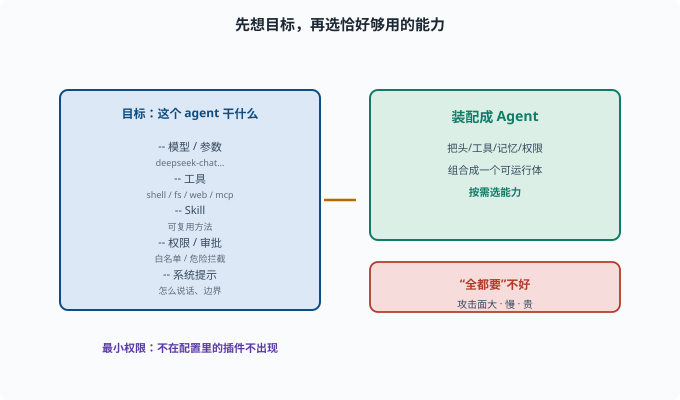

搭自定义 profile：配出你的 Agent
目标：把"读了的概念"变成"你自己的配置"。读完这一页，你能组装一个自定义 profile：选中工具、配好模型与权限、加 skill/MCP，组成你要的 agent。
Profile = 你的 agent 的"配方"
在 deepseek-harness 里，**profile（/preset）**决定：加载哪些插件、每个插件怎么配、有没有补丁。它就是把 09-03 的插件化组合落到你自己的场景。
一个 profile 回答：
用哪个模型、什么参数
开哪些工具（文件/shell/web/mcp）
加哪些 skill
权限与审批怎么设
系统提示是什么
先看现有 profile 怎么写
rg -n "profile|headless|preset" apps/cli/src packages/bundle | head -20
对照现有（如 headless）理解：它声明了哪些插件、什么配置。然后你可以"照着加"。
搭 profile 的思考顺序
1. 目标：这个 agent 要干什么（写代码？查网页？处理文档？）
2. 工具：哪些能力够用且够小（最小权限，[11-01 权限与最小化](../11-safety-governance/11-01-permissions.md)）
3. 模型：哪个供应商/模型
4. 记忆/会话：存哪、多久
5. 权限与审批：哪些要白名单、哪些要审批
6. 系统提示与 skill：怎么说话、有没有可复用方法
先想"目标"再选"工具"，避免"全都要"导致又慢又危险。

上图把"配方"的思考顺序画成一个左实右虚的结构：左边那块是一份 profile 要回答的清单——用什么模型、开哪些工具、加哪些 Skill、权限 / 审批怎么设、系统提示是什么；箭头把这份清单"装配成"右边那个可运行的 Agent。右下的红色小条是反向提醒："全都要"不好，能力越多上下文越贵、决策越慢、攻击面越大。所以配 profile 的核心动作是"按目标只选恰好够用的能力"，并让"不在配置里的插件根本不出现"。
一个自定义 profile 的示意
真实的 profile 是一个 cordis.yml 插件清单（每行 = 一个插件条目）。下面以仓库 examples/headless-agent/cordis.yml 的真实形态简化而来（有删减，字段以该文件为准）：
# 模型提供者：声明用哪个模型、什么推理强度
- id: llm-deepseek
name: '@deepseek-ai/dsh-llm-deepseek'
config:
thinking: enabled
reasoningEffort: max
# shell 能力：bash 工具及其执行器
- id: bash
name: '@deepseek-ai/dsh-bash-local'
config:
timeoutMs: 60000
# web 搜索：不需要就不写这一行
# - id: web ...
# MCP 外部工具：一行一个服务器
- id: mcp-my-fs
name: '@deepseek-ai/dsh-mcp-client'
config:
serverName: my-fs
transport: stdio
command: npx
args: ['-y', '@modelcontextprotocol/server-filesystem', '/data']
它展示了同样的思路：按需选能力——不在清单里的插件根本不会被加载，"关掉"一个能力就是删掉（或 disabled: true）那一行。权限与审批不在 profile 顶层单列，而是由 sandbox/interaction 等插件行各自配置（11-01）。
配完怎么验证
配置能解析（不会启动失败）
`pnpm dsh --profile demo-agent "任务"` 能跑
工具确实被注册（能被模型调用）
权限生效（危险操作会拦截/审批）
结果符合预期
小步验证，别一次配一堆再调试。
思考题
- profile 回答哪些问题？
- 搭 profile 的思考顺序为什么"先目标后工具"？
- 为什么"全都要"不好？
- 自定义 profile 通常要声明哪几类内容？
- 配好后应先验证哪几件事？
参考答案
- 用什么模型、开哪些工具、加哪些 skill、权限/审批怎么设、系统提示是什么。
- 因为只有先明确"这个 agent 要干什么"，才能选出恰好够用的工具；先选工具再想目标容易"全都要"导致又慢又危险。
- 冗余工具会扩大攻击面、增加上下文与成本、让模型更难决策；最小集合更稳、更安全（09-06）。
- 模型/供应商、启用的插件（工具/skill/mcp）、权限与审批、系统提示/记忆与会话配置。
- 配置可解析不失败、能跑任务、工具被注册可调用、权限生效（危险操作拦截/审批）、结果符合预期。
下一步
- 想打包成独立扩展 → 10-09 写一个插件 bundle。
- 想守权限边界 → 11-01 权限与最小化。
- 想复习插件组合 → 09-03 插件化组合。